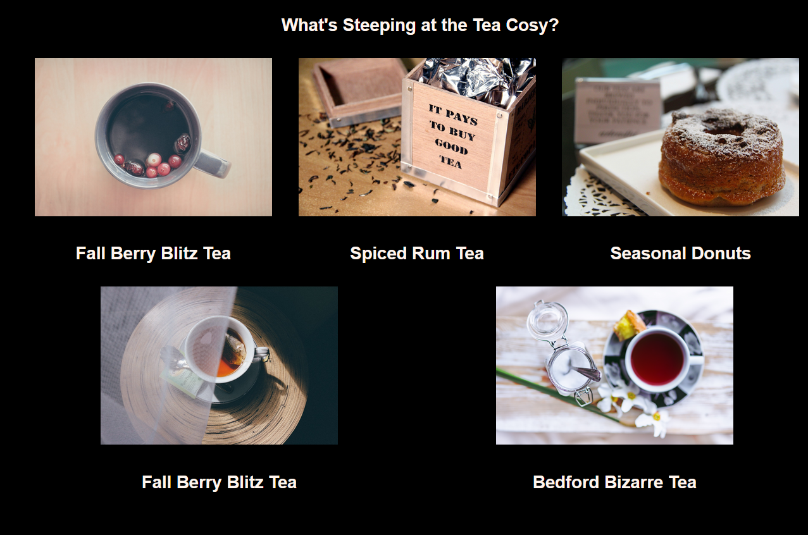
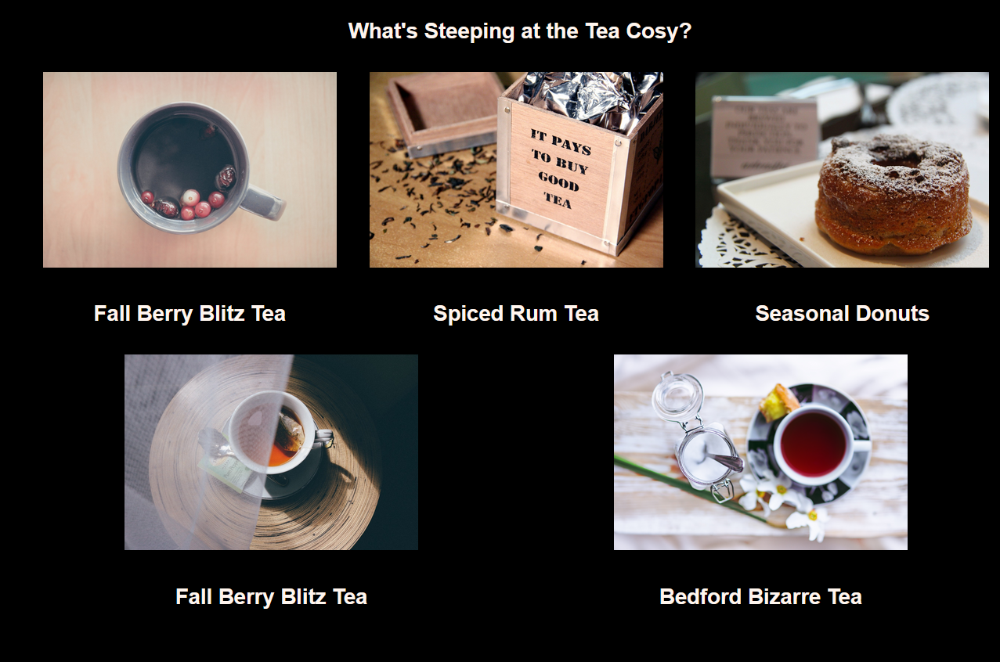

About Me
I am a full-time project coordinator based in Dundee currently training to transition in to front-end web development. My interest in computing developed in 2019 and led to me completing an HND in technical support in June 2022 In my time as a student I gained proficiency in writing Bash shell scripts and also completed an introductory Python Module My current goal is to apply my pre-existing skills and expand on my knowledge to learn the languages required to build websites and ultimately start a long-term career as a developer.


 
